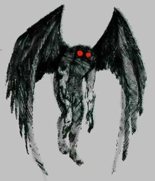
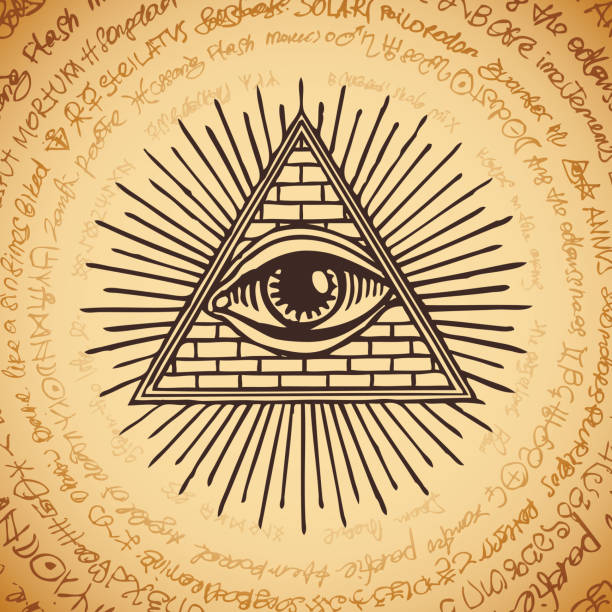
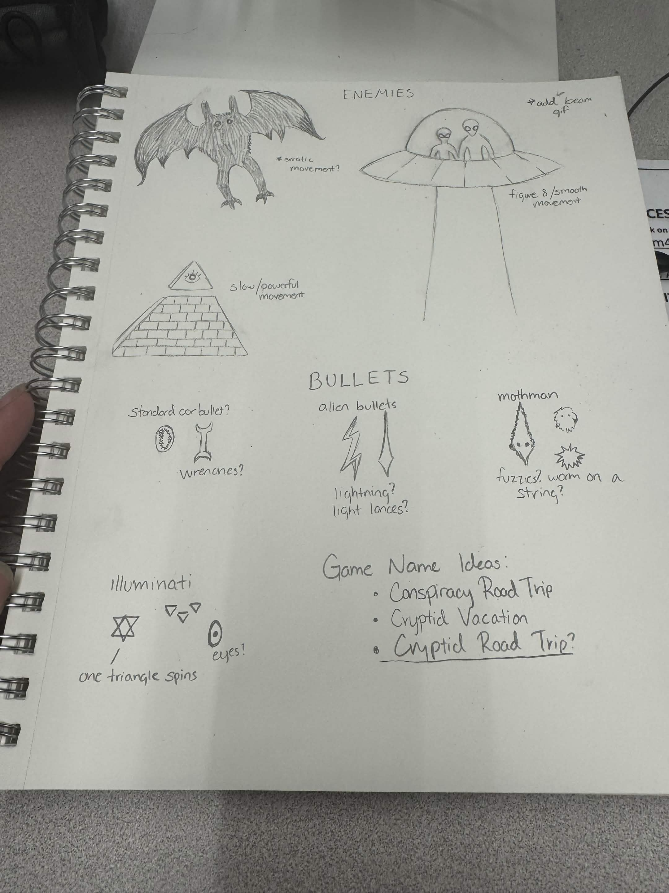
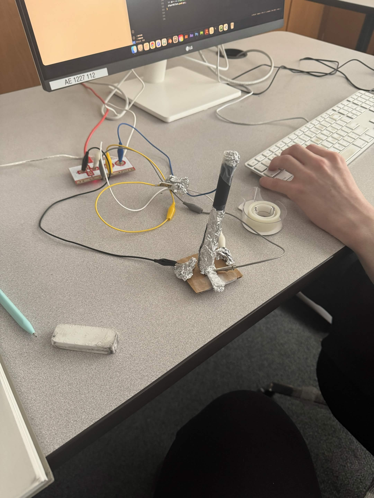
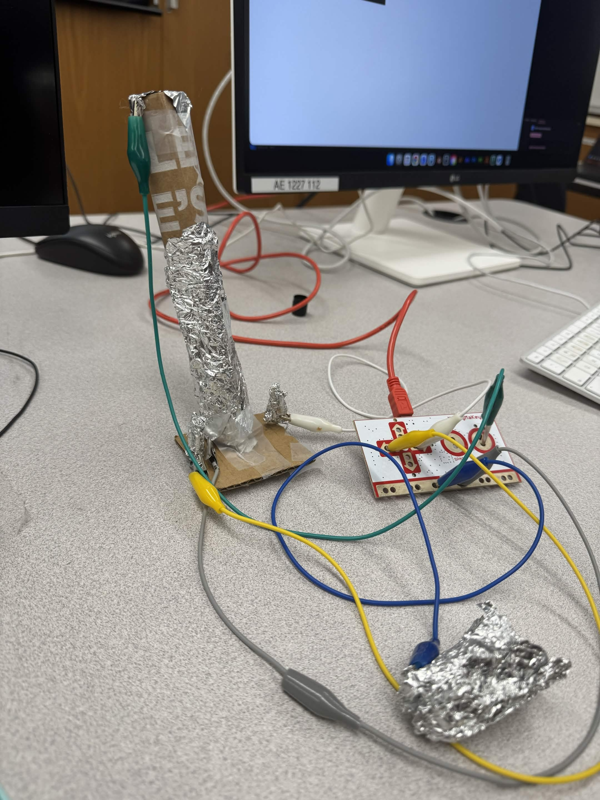

by Jessica Pettinicchi and Archer Nelson
As the Art Lead, Jessica did mainly research into different type of cryptid or conspiracy theories we could use as enemy opponents and what their attacks and movement might look like. Some of the first ideas was some kind of weather control, and we had to pick from different cryptids, but we settled on aliens from Area 51, Mothman, and the Illuminati Eye as the final boss. We thought the illuminati eye was one of the most recognizable and funnier ideas, so we wanted that enemy to be the strongest.


Originally we had ideas about using a "tinfoil" hat to stop "psywaves" from the Illuminati Eye, but we realized adding a hat might complicate the controls and so we just stuck with the joystick in the end.
In class, Archer hammered out our ideas into code while Jessica worked on sketching ideas and coming up with assets. Both of us worked on figuring out how the joystick was going to work and coming up with new ideas on how to make it better. Figuring out the joystick was in fact perhaps the hardest part of this assignment. We went through many iterations, and kept working on it right up until the presentation.



For the joystick, Jessica started by copying the Makey Makey tutorial online, and came up with a cardstock paper protoype that relied on a paperclip underneath to move, and two paper clips on each side as the contact points. We quickly realized that the paperclips weren't actually conductive, and decided to wrap tinfoil around them. This proved however to be too flimsy of a model, so we moved on to a second version where the entire joystick was larger (made with cardboad), and the side contact points were also cardboard (wrapped in tinfoil). This model worked much better and more efficiently, so we stuck with it and just added a few minor improvements.